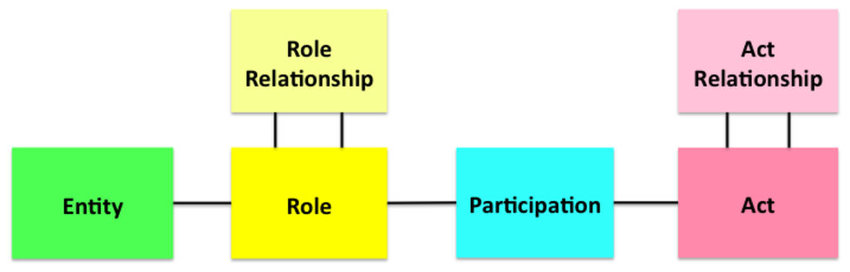

DISI | Health Interoperability Evolution (in natmaterial\health)
DISI | HealthReferences.html
Overview
EHR (Electronic Health Record)
todo ...
Hl7v2
The initial focus of HL7 (1987) was on exchanging information about admissions, discharges and transfers (ADT) within hospitals. (pg. 223)
The HL7 v2 standard has been in continuous development for more than 25 years. (pg. 223)
During its long development period the scope and size of v2 has increased greatly. (pg. 224)
To understand the HL7 v2 documentation , you need to know about the message syntax and data types. (pg. 225)
The full documentation has almost 2500 pages and almost one million words. It contains an enormous amount of
knowledge and experience about health informatics. (pg. 223)
HL7 v2 was developed in an ad hoc and unplanned way. (pg. 243)
HL7 v2 provides multiple ways of doing the same thing, leading to the well-founded jibe:
" when you have seen one implementation
of v2, you have seen one implementation; every one is different". (pg. 243)
The HL7 web site explains the rationale for v3 as follows: (pg. 243)
Hl7v3
HL7 v3 was designed to be comprehensive in scope, complete in detail, extensible as requirements change, up-to-date and model-based, conformance testable
and technology independent.
It uses an object-oriented development methodology and a
Reference Information Model (
RIM) to create messages. (pg. 244)
The
RIM was conceived as a universal reference model for healthcare interoperability,
covering the entire healthcare domain. Each message specifi cation would be
a view into this common model. The RIM is at the core of HL7 Version 3. You cannot
understand v3 without understanding the RIM. (pg. 244)
The
RIM is
not a model of healthcare although it is healthcare specific
nor is it a model of any
message although it is used in messages. (pg. 245)
RIM (Reference Information Model)
The effort to develop the RIM took place in two distinct phases (1992/1999 - many people considered this model to be just too large to
learn and use - and 2000/today -
Unified Service Action Model (
USAM). (pg. 244)
USAM is based on two key ideas. (pg. 244)
The first idea is that most
healthcare documentation is concerned with 'happenings',
in which human and other things participate in various ways.(pg. 244)
The second idea is that the same people and things can perform different roles
when participating different types of happening. (pg. 244)
The
RIM backbone has a small number of
core classes and permitted relationships between them. However it presents quite a
steep learning curve. (pg. 245)
HL7 v3 uses a graphical representation (see
RMIM Diagram Representation,
called
Refined Message Information Model (
RMIM) to display the structure of a message as a color-coded diagram. (pg. 245)
At the root of HL7 V3 lies the
RIM. Everything else is a
constraint on the RIM. Constrained specifications are
called
profiles. The use of profiles is a way to
enforce a particular interpretation to ensure interoperability.(pg. 265)
The following types of constrained model are recognised within HL7 V3, starting
with the broadest, proceeding to the narrowest (Fig. 14.1 ). (pg. 265)
- DMIM Domain Message Information Model : a general model of a domain in
HL7 notation from which a related family of message specifi cations can be derived. pg. 265)
DMIMs do not have a hierarchical structure and cannot be serialized. (pg. 265)
DMIM cannot be implemented as it is but needs to be further constrained as RMIMs.(pg. 265)
- RMIM Refined Message Information Model: may be thought of as a diagram of a message specification. (pg. 266)
RMIMs and DMIMs use the same notation. One important difference is
that an RMIM has only one point of entry and can be expressed in a serialized format. (pg. 266)
- HMD Hierarchical Message Description: an RMIM expressed in a tabular format. (pg. 266)
- MT Message Type: a specifi c specifi cation of a message, which can be used in a data interchange. (pg. 266)
- CMET Common Message Element Type: reusable modules, which can be used in multiple messages, rather like a program sub-routine. (pg. 266)
The
RIM,
DMIMs and
RMIMs can be constrained by
omission , cloning, multiplicity,
optionality, data type constraint and code binding. (pg. 268)
HL7 templates are used to constrain and verify conformance to profi led HL7 Version
3 Refi ned Message Information Models (RMIMs). Templates are used widely in CDA (pg. 274)
HL7 uses a
special graphical notation for specifying RMIMs and DMIMs. (pg. 272)
RMIMs are built using a special tool-set developed by HL7. The original tools,
based on Microsoft Access and Visio are in the process of being replaced by a new
generation of tools, which use a slightly modified notation. (pg. 274)
The basis of these tools is a set of inter-related XML schema, known as
Model
Interchange Format (
MIF).
MIF defi nes the primary artefacts that can be developed
or exchanged as a result of HL7 V3 standards development and implementation. (pg. 274)
CDA (Clinical Document Architecture)
Clinical Document Architecture (
CDA) is the most widely adopted application of HL7 V3. (pg. 283)
The
CDA paradigm takes the document metaphor seriously. It is
illuminating to compare the differences between the database and document metaphors. (pg. 283)
CDA has been widely adopted for information exchange
between loosely coupled healthcare systems around the world. (pg. 329)
In contrast (to a database structure), a document, electronic or paper, is organized as a stand-alone artefact
to convey human understanding.(pg. 283)
Documents are human-readable . The meaning understood by a human reader is
paramount, even when there is coded machine-readable information within the
same statement.(pg. 285)
CDA templates are used to specify how CDA is to be used for particular purposes
and specifi c use cases. (pg. 296)
HL7 Dynamic model
An
interaction is a unique association between a specific message type,
a particular trigger event that initiates or triggers the transfer, and the application
roles that send and receive the message type. (pg. 303)
In HL7 Version 3, each interaction is described in a table with its name and artefact
ID, together with the sending and receiving Application roles, the trigger event,
the message type, the trigger event type and the wrapper types and their artefact
identifiers. (pg. 303)
IHE XDS
Integrating the Health Enterprise (
IHE)
Cross-Enterprise Document Sharing
(
XDS) enables healthcare documents to be shared over a wide area network,
between hospitals, primary care providers and social services. It is part of the
IHE
IT Infrastructure Technical Framework Integration Profiles (
ITI-TF-1). (pg. 311)
Rather than having one big database at the center, IHE XDS offers a
distributed
collaborative approach to sharing clinical documents held by different healthcare
organisations. It is based on
standardized metadata. (pg. 311)
Metadata is information about an information item that is used in search to find
it later. It describes the content (what), time (when), people (who) and locations
(where) applicable to any item. (pg. 312)
Clinical and patient portals rely on common metadata
to find the information being sought. Unless every source system supplies
metadata in the same way, there is a risk that information from some sources cannot
be found. This is a clinical safety risk. (pg. 312)
The
ebXML registry standard provides a broad specifi cation for business
portals. It is the foundation on which XDS has been built. (pg. 312)
HL7 CDA contains a common document
header, which can be thought of as metadata. However, IHE XDS and CDA are
not tightly aligned. (pg. 312)
FHIR (Fast Healthcare Interoperability Resources)
Consistency: hile v3 excelled at producing consistent definitions,
the consequence of this was that it was actually harder to use it inconsistently,
and v3's rigorous consistency turned out to be a false advantage,
since across the healthcare system, there is little
consensus about what information should be used, how it should be represented,
and when it should be exchanged. (pg. 330)
The FHIR team has adopted a manifesto, a declaration of the goals and priorities of
the FHIR project. (pg. 344)
Complexity: in order to implement successfully, the specification designers and the
implementers must read and understand many layers of v3/RIM documents. (pg. 330)
Further, the custom tooling stack that HL7 had to produce to string all the layers together
requires its own expertise, and the end outcome is engineering artefacts that do not
align with what else is commonly used in the industry. (pg. 330)
Truly successful implementations of v3 or CDA – and there are some – require an extensive custom stack of
libraries and templates. (pg. 330)
While the
v3/RIM program had met its own goals, it was unfortunately clear that
it had not met HL7's wider goals of
making interoperability cheaper and easier (or,
alternatively, of
producing standards that could compete in the market, since healthcare
interoperability standards is a market of its own). (pg. 330)
In response to the growing awareness of this issue, HL7 created a ‘Fresh Look’
task force that was asked to examine the best ways HL7 could create interoperability
solutions, with no pre-conditions on what those solutions might be. (pg. 330)
FHIR aspires to follow RESTful principles as much as possible.... (pg. 331)
... by adopting the form of interoperability, called an
Application Programming Interface (
API) ... (pg. 331)
.
... rather the form based on the
Service Orientated Architecture (
SOA). (pg. 331)
Interoperability specifications can be grouped into one of several different
approaches: (pg. 331)
- Messages : define a series of fixed information that can be exchanged between applications when a specifi c event occurs.
- Services : define a set of functional operations that one system exposes for others
to use, along with the expectations of behaviour around these.
- Documents : define a set of fixed information packages that can be exchanged or stored for later use.
As a
RESTful specification,
FHIR is organised around the concept of a
repository,
which is a list of resources of a particular kind. (pg. 331)
Most of the significant content of the FHIR specification is in the definition of the
particular types of resource. FHIR defines around 100 types of resource, representing
widely different types of content.(pg. 334)
Most of the functionality of a FHIR interface is provided by three services (pg. 334)
- Instance Service
- Type Service
- System Service
The
FHIR API provides a
record centric approach to data exchange. Instead of
asking the server to perform some operation, the client tells the server what the
contents of the record should be. These services are often called
CRUD services (pg. 334)
In addition to these base services that apply to all the types of resources defined
by FHIR, FHIR allows for the
additional special services that provide specific functionality
beyond simple CRUD services. FHIR defi nes a number of useful services
itself, such as asking a server whether it considers a resource is valid, linking two
patients, or retrieving all the records associated with a particular patient. (pg. 334)
Servers can define their own addition services.(pg. 334)
RIM (Reference Information Model)
Core concepts: entity, role, partecipation, act).

Now:
Application Implementation and Design HL7 "User Group"
V3 RMIM Designer (in Visio)
Tools for RIM based software development
Tools for RIM based software development
Open Mapping Software (Transforms By Example-TBX )
Transforms By Example in Healthcare
TBX-For-V2-and-FHIR
phi TECHNOLOGY
The RIMBAA Technology Matrix
FHIR (Fast Healthcare Interoperability Resources)
V3 based on RIM is often impratical in the real world. FHIR aims at using the best parts of RIM, while keeping complexity under control.
Moreover it is 'EHR agnostic'.
CDA (Clinical Document Architecture)
Software Implementation of CDA
Model Interchange Format
MIF based code generation
There are some HL7 version 3 based projects that don't have a published set of MIFs - they only have normative XML schema.
These projects mostly date from the early days of HL7 version 3, when MIF had not established itself as the metamodel expression used for HL7 version 3.
DICOM (Digital Imaging and Communication in Medicine)
IHE (Integrating Healthcare Enterprise)
CCD (CONTINUITY OF CARE)
PARSING CCD USING MIRTH AND MDHT